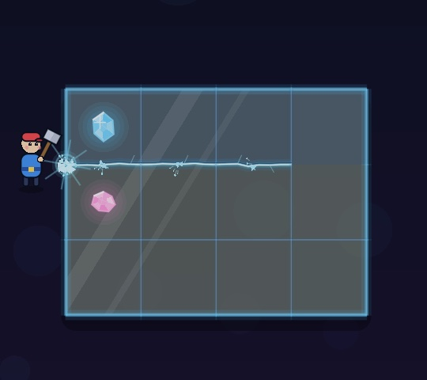

Gra logiczna na iPhone’a
Shiverglass
Jeden kryształ na odłamek.
Wybierz miejsce uderzenia, obserwuj pęknięcia i rozbij szkło tak, by w każdym odłamku pozostał jeden kryształ.
Jak grać
Jak grać
80 zagadek w ośmiu rozdziałach.
Zobacz, jak pęka szkło
Zobacz, jak uderzenie rozdziela dwa kryształy na pierwszej planszy, a na późniejszym poziomie pęknięcie przechodzi przez parę portali.
Otwórz nagranie rozgrywki
Wybierz miejsce uderzenia
Znajdź linię, która pozwoli rozdzielić kryształy.

Rozbij szkło
Śledź pęknięcie i zostaw po jednym krysztale w każdym odłamku.

Przeprowadź pęknięcie przez portal
W dalszych rozdziałach pojawiają się portale i inne sposoby zmiany toru pęknięcia.